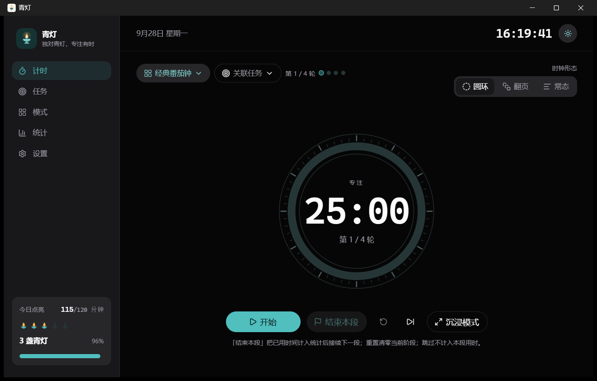
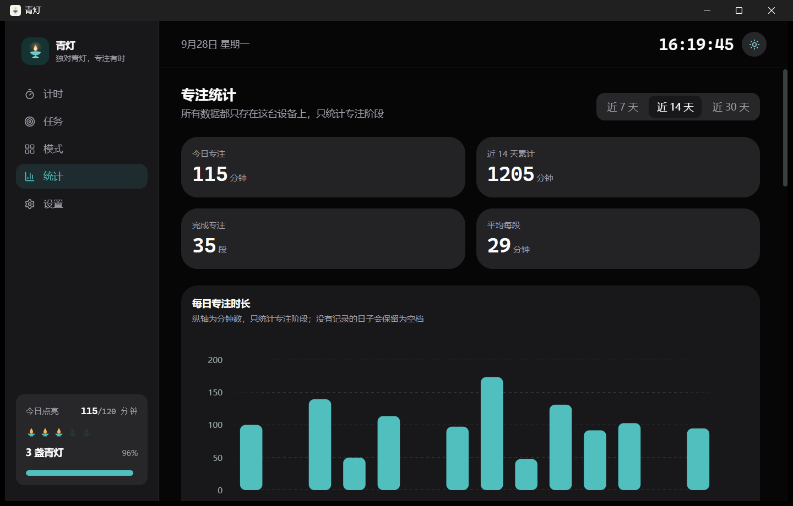
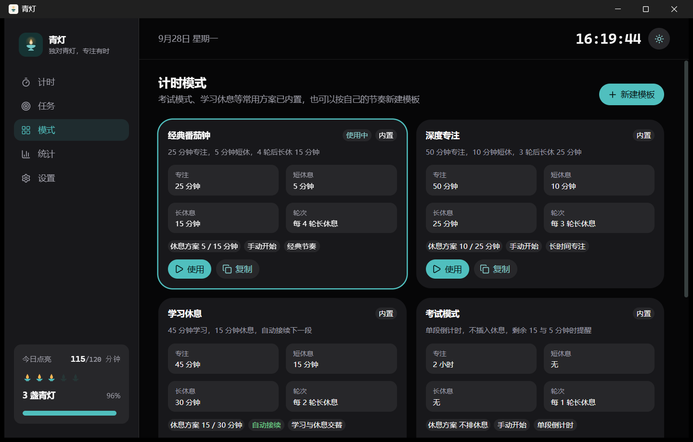

下载
两个平台的记录格式一致，桌面版导出的完整备份可以拿到安卓上留档。
- 安装包已经过签名，覆盖安装不会丢掉已有记录。
- 桌面版装好后有新版本会自己提示；安卓版需要下载新的 APK 覆盖安装。
- 正在读取最新版本…
它做什么
- 三种时钟
- 圆环、翻页、常态倒计时，随时可换。圆环外圈是刻度，进度弧上带一个跟着走的光点。
- 自动接续
- 专注与休息首尾相接，不用每轮重新点开始。想自己掌握节奏时，也可以在设置里关掉。
- 结束本段
- 不必等整轮跑完。随时按「结束本段」，已经用掉的时间会照实计入统计，然后接续下一段。
- 灯位与统计
- 今天点亮了几盏青灯、每天专注多少分钟、完成多少段，都按你自己的记录算，并且只统计专注阶段。
- 任务
- 给任务估个段数，关联计时后进度会自己往上走，不用手动加减。
- 只存本机
- 记录写在这台设备的 SQLite 文件里，不注册、不上传、不联网。可以一键导出备份或表格。
界面




更新记录
正在读取最新版本…
每个版本的完整说明和校验文件都在 发布页。